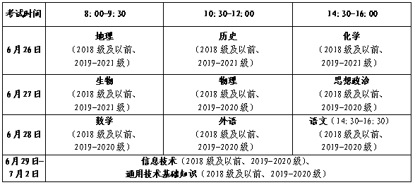

山东省2022年夏季普通高中学业水平合格考试将于2022年6月26日—7月2日进行。现就考试报名相关事项公告如下：
一、考试科目和时间

2018级及以前和2019-2020级考生可报考11个科目，2021级考生仅可报考地理、历史、化学、生物4个科目。已合格科目无需报考。
二、报考资格
（一）普通高中学生。
尚有未合格科目的2017级、2018级、2019级、2020级普通高中学生和2021级普通高中学生具有报考资格。
（二）社会人员。
社会人员必须先取得考籍才具有报考资格，考籍有效期5年。之前已经取得考籍的，无需再次申请。没有考籍的，须在4月21日—28日完成考籍申请，申请程序为：登录山东省基础教育管理信息化平台（http://sdbe.sdei.edu.cn/tdxl)进行网上注册；注册完成后，本人须于工作日持户口本、身份证等有效证件，到户籍地或居住地县（市、区）教育行政部门考籍管理机构进行现场确认。未经现场确认的，不能取得考籍，不能报考本次考试。
三、报名和缴费
（一）报名方式。
考生须于5月6日—13日每天9:00—17:00，登录报名系统（http://xysp.sdzk.cn）进行信息核对，核对无误后直接进行网上报名缴费。只有缴费成功后才视为报名成功。未成功缴费的考生，视为自动放弃，不能参加本次考试。
（二）注意事项。
首次登录系统须注册手机号码，获取短信验证码，按系统要求设置登录密码；考生应妥善保存本人的短信验证码和登录密码，每次登录报名系统时均须使用；因考生个人泄露信息或由他人代报名造成的一切后果，均由考生本人承担。
考生须对考籍号、姓名、性别、身份证号、照片等信息逐一进行认真核对。如果在注册手机号码时，输入考籍号和身份证号后提示信息有误，或者在核对基本信息时，发现考籍信息中存在错误，需考生联系所在学校，由学籍管理员登录山东省基础教育管理信息化平台进行核查或修改。未核对、修改致使照片、身份证号等考籍信息不全或不正确的考生，不允许参加考试。
（三）收费标准。
按照相关规定，考试收费标准为每人每科次16元。
四、残疾考生申请合理便利
残疾考生申请合理便利（含听力免试），参照教育部、中国残联等有关文件执行。考生个人须于5月13日前向学校（社会考生向县级招生考试机构）提出书面申请，申请内容包括：本人基本信息、残疾情况、所申请的合理便利等,同时提供残疾人证、身份证的原件及复印件，以便有关单位进行审核。
之前考试已经申请过合理便利或外语听力免试的考生，在考籍有效期内无需再次申请，但须在规定时间内向学校（社会考生向县级招生考试机构）报备。
五、准考证打印
6月19日—24日每天9:00—17:00,6月25日—7月2日每天7:00—20:00，考生可登录报名系统（http://xysp.sdzk.cn
六、成绩公布与复核 （一）公布时间。 2022年8月下旬，具体时间另行通知。 （二）公布方式。 1.短信推送：以短信方式推送成绩信息至考生注册的手机号码。 2.网站查询：考生在成绩发布时间内登录成绩查询系统（http://cx.sdzk.cn）查询本次考试成绩信息。 （三）成绩复核。 考生如对本人考试成绩有异议，可于成绩公布之日起3个工作日内，由本人携带居民身份证和准考证到参加考试地县（市、区）招生考试机构，提出成绩复核申请，逾期不予受理。 七、其他事项 请考生务必于考前关注山东省教育招生考试院网站，登录查阅《致山东省2022年夏季普通高中学业水平合格考试考生的一封信》等信息，了解考试和疫情防控政策要求，做好防疫检测和考前准备。 附件： 山东省教育招生考试院 2022年4月18日
 2022年夏季普通高中学业水平合格考试各市报名咨询电话表.docx
2022年夏季普通高中学业水平合格考试各市报名咨询电话表.docx